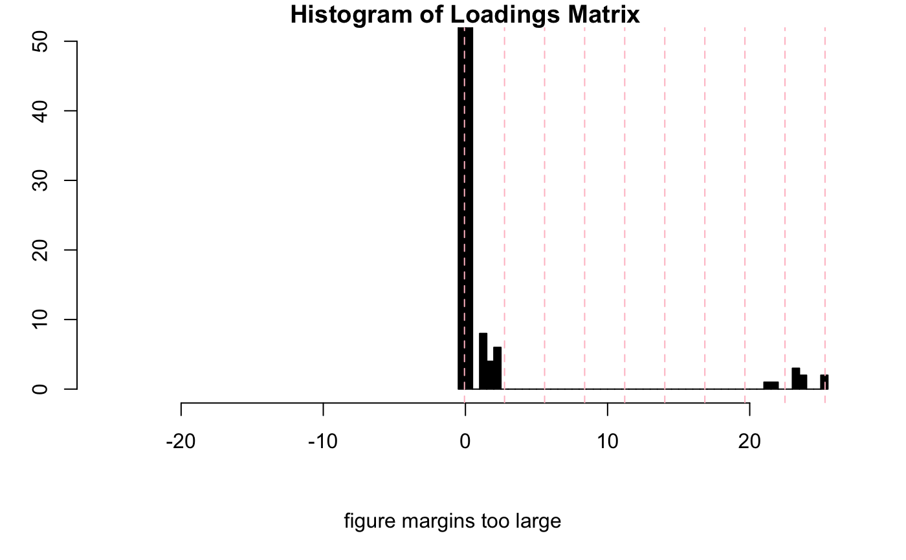

Carry out PARAFAC analysis of a Spectra2D object.
Function parafac from multiway is used.
For large data sets, computational time may be long enough that
it might desirable to run in batch mode and possibly use parallel processing.
pfacSpectra2D(spectra, parallel = FALSE, setup = FALSE, nfac = 2, ...)
| spectra | An object of S3 class |
|---|---|
| parallel | Logical. Should parallel processing be used? Unless you love waiting, you should use parallel processing for larger data sets. |
| setup | Logical. If |
| nfac | Integer. The number of factors/components to compute. |
| … | Additional parameters to be passed to function |
An object of class pfac and parafac, modified to include a list
element called $method which is parafac.
To get reproducible results you will need to set.seed(). See the example.
R. Bro "PARAFAC. Tutorial and applications" Chemometrics and Intelligent Laboratory Systems vol. 38 pgs. 149-171 (1997).
A. Smilde, R. Bro and P. Geladi "Multi-way Analysis: Applications in the Chemical Sciences" Wiley (2004).
For other data reduction methods for Spectra2D objects, see
miaSpectra2D and popSpectra2D.
#> | | | 0% | |======= | 10% | |============== | 20% | |===================== | 30% | |============================ | 40% | |=================================== | 50% | |========================================== | 60% | |================================================= | 70% | |======================================================== | 80% | |=============================================================== | 90% | |======================================================================| 100%#> Error in "pop" %in% class(so): object 'res' not foundres1 <- plotLoadings2D(MUD1, res, load_lvls = c(1, 5, 10, 15, 25), main = "PARAFAC Comp. 1 Loadings")res2 <- plotLoadings2D(MUD1, res, load_lvls = c(1, 5, 10, 15, 25), ref = 2, ref_lvls = seq(5, 35, 5), ref_cols = rep("black", 7), main = "PARAFAC Comp. 1 Loadings + Ref. Spectrum")# Selection of loading matrix levels can be aided by the following inspectLvls(res1, loading = 1, ylim = c(0, 50), main = "Histogram of Loadings Matrix")